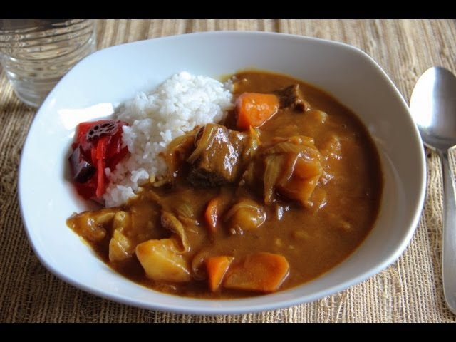

Curry Recipe

How to make curry
Typically, curry rice consists of onions, carrots, potatoes and beef. That’s the classic combination and the most popular one used across Japan.
However, you can use pretty much any combination of vegetables and protein to create your own special curry.
Ingredients
- 2 tablespoons peanut oil
- 1 pound stewing beef, chopped into bite size pieces
- 1 large onion peeled and finely chopped
- 2 cloves garlic, minced
- 1 tablespoon ginger, peeled and minced
- 1 apple, peeled, finely chopped or grated
- 3 tablespoons all-purpose flour
- 2 large carrots (peeled and roughly chopped on the bias)
- 1 large potato (peeled and roughly chopped)
- 1 teaspoon garam masala
- 4 tablespoons curry powder
- 2 tablespoons tomato paste
- 2 cups red wine
- 1 1//2 tablespoons granulated sugar
- 2 tablespoons soy sauce
- 4 cups water
Steps
- Cook the beef cubes in a large pot and transfer them to a plate once they are cooked.
- Add onions to the pot and cook them until tender.
- Stir in garlic, ginger and grated apple and cook for two minutes.
- Sift flour and stir.
- Add carrots, potatoes and spices and stir.
- Add tomato paste and red wine and bring to a boil.
- Stir in sugar, soy sauce and water and bring to a boil.
- Return the beef to the pot, cover and simmer for half an hour.
- Remove the lid and cook for an additional 30 minutes.
Other recipes